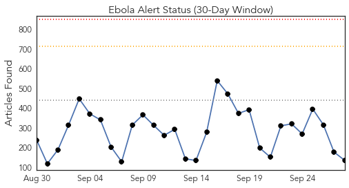
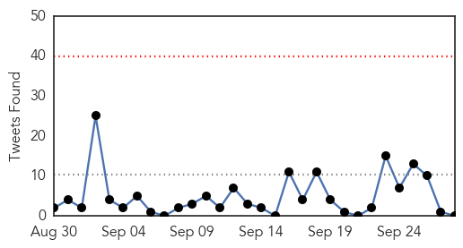
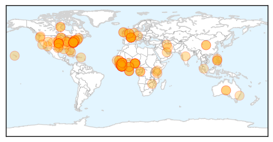
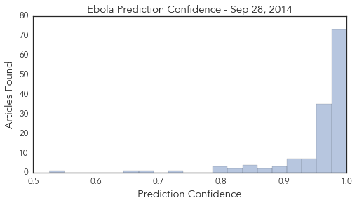

Toggle navigation
Early Warning
Daily Alerts
Ebola
Sep 28, 2014
Compare to:
-
Dengue Fever
Hemmorhagic Fever
Mold/Fungal Infection
Influenza
Meningitis
Pertussis / Whooping Cough
Middle East Respiratory Syndrome
Cholera
Hepatitis
Chikungunya
Yellow Fever
Bubonic Plague
West Nile Virus
Swine Flu
Measles
Unknown
Mumps
30 Day Trends
Web: 0
alerts
, 0
warnings
Twitter: 0
alerts
, 0
warnings
Top Articles:
Showing top 50 articles...
1.000
Leaving Ebola fighters behind to die
1.000
Pittsburgh Post-Gazette
1.000
Chief medical officer in Liberia enters Ebola quarantine
1.000
Liberia's chief medical officer under quarantine
1.000
Editorial: Tragedy of Ebola hits home in Hampshire County
1.000
Chief medical officer in Liberia enters Ebola quarantine
1.000
Liberia's chief medical officer under Ebola quarantine
1.000
Chief medical officer in Liberia enters Ebola quarantine
1.000
Ebola Virus Outbreak: Cuba Sends More Medical Professionals to West Africa
1.000
UMCOR, UMC Health Boards Respond to Ebola - Liberia
1.000
12 Terrifying Numbers That Show Just How Bad The Ebola Crisis Is
1.000
Russian scientists develop, test experimental Ebola vaccine
1.000
Are we safe from the Ebola disease? – The Express Tribune Blog
1.000
Liberia's top doctor in quarantine after assistant dies of Ebola
0.999
Article: Imperialism and the Ebola catastrophe
0.999
EU states 'can do more' to battle Ebola virus
0.999
Grand Rapids Herald-Review: Columnists
0.999
Ebola clinics fill up as death toll hits 3,000
0.999
Fighting Ebola means sweating in protective suit
0.999
Ebola clinics fill up as Liberia awaits aid
0.999
Ebola-exposed patient arrives at Maryland clinic
0.999
Chilling report a call to action on Ebola
0.999
Liberia awaits aid as clinics fill up
0.999
HIV drug could help save some stricken with Ebola
0.999
Health care system in collapse as Ebola death toll passes 3,000
0.999
Ebola clinics fill up as Liberia awaits aid
0.999
Ebola clinics fill up as Liberia awaits aid
0.998
Promised Ebola Aid Falls Short of Needs in Liberia
0.998
Liberia's Top Doctor Places Herself in Ebola Quarantine
0.998
The problem with “Ebola”: The troubling, xenophobic language of disease
0.998
Promised Ebola Aid Falls Short of Needs in Liberia
0.998
Experimental Ebola vaccines ready in coming months as deaths pass 3,000
0.998
Promised Ebola Aid Falls Short of Needs in Liberia
0.998
Promised Ebola Aid Falls Short of Needs in Liberia
0.997
Exposed Ebola Patient Arrives In U.S.
0.997
FIU doctor says education key to stopping Ebola
0.997
Ebola clinics fill up as Liberia awaits aid
0.997
US doctor exposed to Ebola will be treated at Maryland hospital
0.997
Sudan Vision Daily
0.996
Ebola Affected Countries Gets Additional Cuban Doctors And Nurses
0.996
Liberia's chief medical officer goes under Ebola quarantine
0.996
Doctor Exposed to Ebola Virus Arrives at NIH
0.996
SOS Medical Centre loses co-worker to Ebola - Liberia
0.994
Liberian medical officer in Ebola quarantine
0.993
Phl urged to send volunteers to Africa to contain Ebola
0.993
Editorial: More must be done to stop spread of Ebola
0.993
WORLD TRIBUNE PAKISTAN IMF unblocks cash as desperate west Africa awaits Ebola aid
0.992
Ebola aid corridor opens as death toll exceeds 3k
0.992
Liberians set to be deported to Ebola-stricken homeland get to stay
0.992
Maryland hospital to care for U.S. doctor exposed to Ebola in West Africa
Top Tweets:
No tweets found for Sep 28, 2014
Web/News Articles

Tweets

Article Locations

Article Confidences
